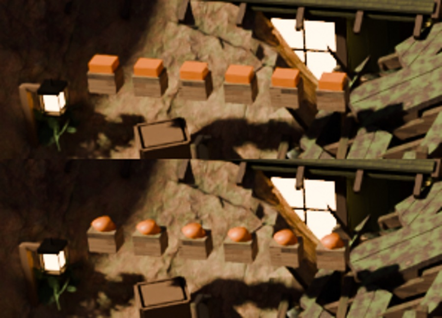
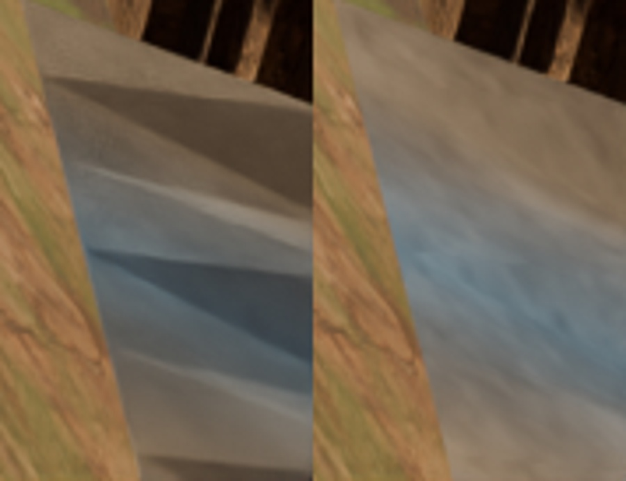
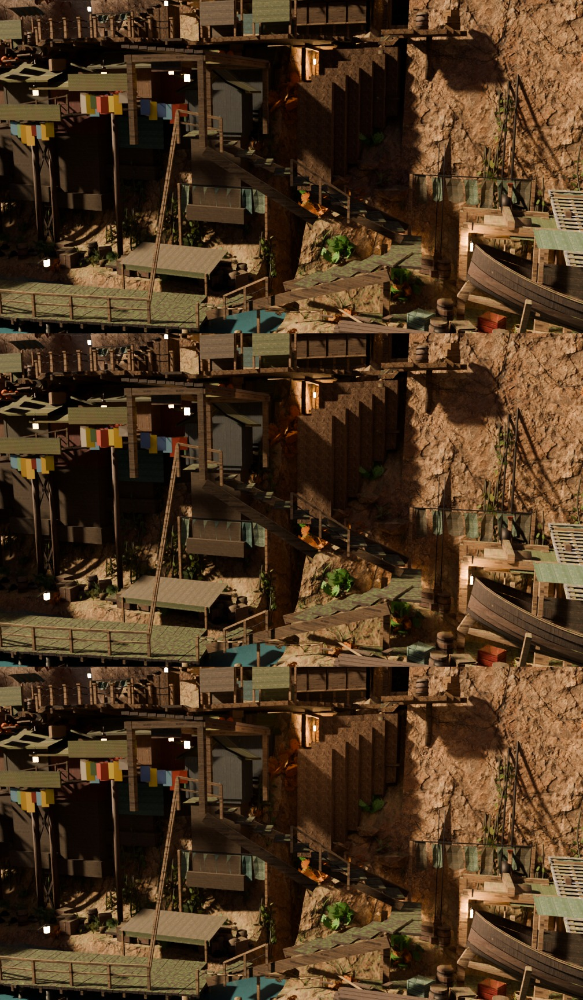
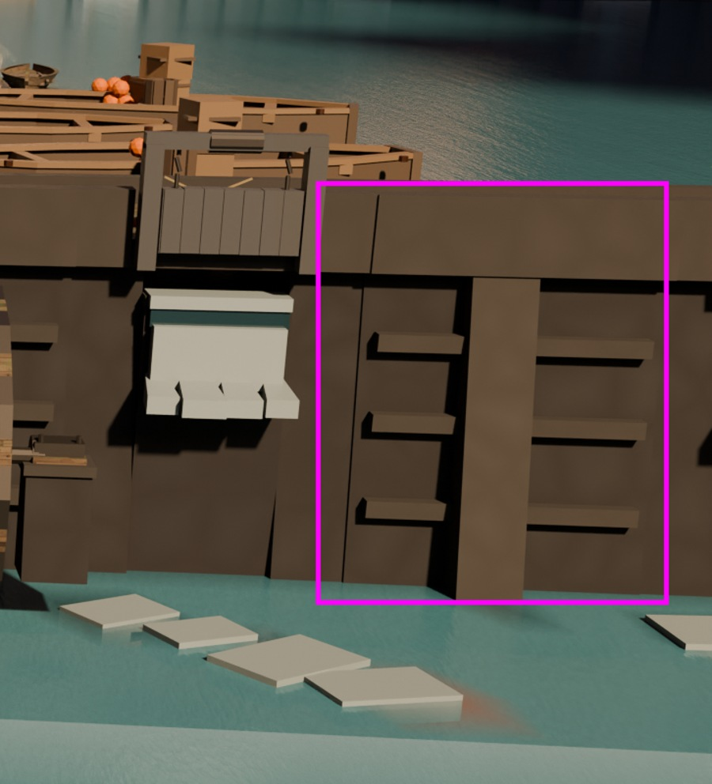

Carriers tools/dh_produce_kit.py and tools/dh_cloth_smooth.py
(both new), plus edits to tools/qm_awning_canvas.py and
tools/dh_qm_underlight.py. Footprint measurement off one
dh_objmap dump (15 cameras × 240×135 = 486,000 marched rays); world
positions from plate_probe's reconstruction of the shipped plates; contact from a
real BVHTree.overlap; everything else numpy on rendered frames. Evidence and
instruments in docs/qa/dellhollow-graphics/r13/evidence/.
t2c_ prefix is a PASS, not a subject, and sizing by it would
have been thirty times too bigRound 12 asked for a census of the whole prefix before fixing one member. Censused:
38 objects, 3.69% of the town's fifteen frames, up to 8.18% of waterfront. The two
members the judge named have one thing in common that nothing else in the family has —
mat_pumpkin is the only material in the family with no texture at all
(2 nodes: a Principled and an Output), where ten of the sixteen carry the town's standard
21-node / 4-image recipe. That material is 0.125% of the town's rays.
And the material is not the defect, because the same material reads fine elsewhere. Nine meshes wear it, in exactly two shapes:
| shape | meshes | polygon sides | use_smooth | per unit |
|---|---|---|---|---|
shelf_clutter, qm_clutter_0/4, gate_clutter, barge_* |
68 units | 4, 10 | 100% | 20 v / 12 f — a 10-gon drum |
t2c_W7_keeper_boxes, t2c_LH3_rail_flowerbox,
t2c_F5_fish_floats, t2c_G8_cliff_baskets,
t2c_W5_flowerbox_rail |
17 units | 4 | 0% | 8 v / 6 f — a literal obox() |
Round 12's dh_clump_kit finding again, in a different district and a different
grammar: the town already owns the kit and one pass invented its own. So the fix is a
CARRY and the material needs no edit — which is the control that says so. 30 cuboids were
carried (the container material mat_timber stays a box, because a crate IS one).

cottage, t2c_W7_keeper_boxes — before (top) and after (bottom).
Rounds 8–11 worked this surface as relief, then value, then texture. Round 12 handed over the word clipping. Both inherited words are refuted on measurement:
BVHTree.overlap of all
nine awnings against every other mesh in town: qm_awning_0 has zero overlaps
and a minimum per-vertex down-ray gap of 2.075 m (max 3.412) over
qm_paving / qm_planking / qm_stall_1.
That is AWN_CLEAR doing its job. Three other awnings do overlap something and
none of them is the complained-about one.mat_qm_paving's 6.40 in round 11's own table
and the 0.00–3.56 it had before.What it is, exactly: 24 of 24 quads non-planar, 0% smooth, worst deviation 0.0705 m —
which is SAG_MID (0.073). The scallop lifts alternate columns, so every quad
spans one lifted rib column and one unlifted mid column and cannot be planar; flat-shaded, the
renderer's two triangles get different normals and there is a razor crease down every panel.
The cause is arithmetic and was predictable from qm_build.awning() before anything
was rendered. Town-wide, 52 meshes carry non-planar quads and 35 are at 0% smooth — the
cliffs are 75–99% non-planar and 100% smooth, so the town's own convention already knows this
and the cloth pass never got it.
And the judge had already named the mechanism in its own words. The before arm, on crossing:
“An untextured triangular polygon mesh clips into view at the bottom-right edge of the screen.”
“An unfinished grey triangular mesh clips through the wooden walkway terrain at the bottom right corner.”
The load-bearing word was never clipping. It was triangular.
Round 11 put a 4.1 mm weave in the canvas on the reasoning that “a 3–4 mm weave is two pixels and the denoiser will take most of it”. An FFT of a 128 px patch of the awning inside its own ray mask on the shipped plate puts a peak at k = 62 of a possible 64 — period 2.06 plate px = 4.5 mm on the cloth, reproducing that file's own thread pitch to 10% — carrying 8.4e5 of power against 1–5e4 in every neighbouring high-band bin, i.e. forty times its own band. It aliased into a diamond gauze that photographs as wire screen. A normal map is a SLOPE, and a slope at Nyquist is the lighting amplifying the alias — so the weave came out of the height field and stays in the diffuse and the roughness, where it modulates two quantities the eye integrates.

crossing, qm_awning_0 at 5.3 m — before (left) and after (right).
Round 12 refuted every global ambient lever and left this owing LOCAL sources. Round 11's three cards reached 2% of the distance; round 12 named the cause (the row was laid across the subject's whole bbox) without sizing it. Sized here by reconstructing world XYZ from the plate's own solved camera and depth inside the subject's ray mask (241,891 px, 5.86% of deep-stairs):
| world x | px | L p50 | crushed (L≤8) |
|---|---|---|---|
| 35–37 | 59,155 | 6.7 | 64.5% |
| 37–39 | 113,543 | 10.9 | 35.0% |
| 39–41 | 42,910 | 13.3 | 13.3% |
| 47–49 | 940 | 84.4 | 4.1% |
| 53–55 | 10,919 | 29.6 | 1.9% |
215,608 px — 89.1% of the subject's visible pixels — are at x < 41, and everything past x 47 is already lit. The row is now clipped to the gap, and the gap's east edge is derived from the lights in the master (the westmost card of the existing gorge-ward fill run, x = 44.00) rather than typed, so moving that run re-derives this one.
| arm (deep-stairs) | L p05 | L p50 | crushed | frame p95 | blown |
|---|---|---|---|---|---|
| baseline: 3 cards, 13.33 W, whole bbox | 4.1 | 10.6 | 38.2% | 141.0 | 0.070 |
| 4 cards in the gap, 13.33 W | 4.6 | 11.3 | 31.1% | 141.0 | 0.070 |
| 4 cards, 60 W | 8.0 | 16.9 | 4.5% | 141.5 | 0.070 |
| 4 cards, 150 W — shipped | 13.5 | 27.5 | 0.4% | 142.5 | 0.070 |
| 4 cards, 360 W | 21.5 | 47.4 | 0.1% | 145.3 | 0.070 |
The crushed knee is at 60 W and the picture is why that is not the pick: at 60
the mass is lifted and still unreadable, at 150 the deck structure, the ladder and the platform
read, and at 360 the whole left mass flattens to one even brown with the under-deck shadows gone.
Cost of 150 W: frame p95 +1.5 of 255, blown pixels identical to three decimals, and the
same material 20 m away at waterfront moves +4.1 — the card is local, which is what
use_shadow = False plus a 16 m cutoff is for.

deep-stairs — baseline, 60 W, 150 W.
Round 12 attributed north-landing's “white stepping stones floating flat on the
water” to lf_crest_bay_02 / lf_spill_bay_01 on
mat_blackstone, “with no immersion at the waterline”. Both halves are
refuted. A ray census of the judge's own region: lf_dam_boil | mat_boil 28.3%
against mat_blackstone's 0.5%. The bay stone reads L p50 66.3, RGB
75.8/60.3/44.5 — a dark warm brown wall, not a white slab. And the foam is 0.09 m proud
of the pool (world z p50 −3.71 against the water's −3.80), which is exactly what
locksfoot_kit.spill_bay's own comment aimed for. What makes it read as a stone is
that it is opaque, near-neutral (RGB 149/146/131 in a teal frame), 33% brighter than the
water it sits in, and has four hard straight-edged wedge silhouettes. That is a material and
opacity question, and it belongs to round 14.
